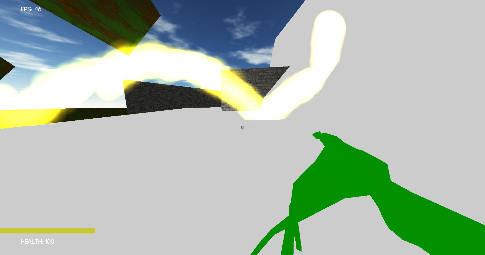
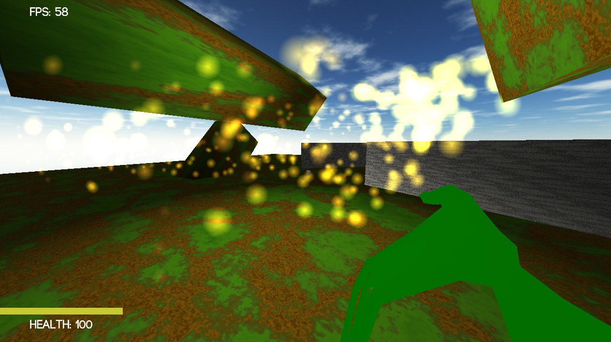

I created a basic 3D particle system engine in C++, using OpenGL for rendering. The particles themselves only keep track of position, velocity, age, and size. Color is determined through the settings of the particle system (a linear interpolation based on age). The particle system adds and removes particles when needed. Each frame, update is called with a timestep. This advances the simulation by moving particles, resizing them, calculating collisions, and adding or removing particles as necessary. For rendering, FillGLData is called. This collates the actual vertex, UV, and color data into a contiguous array which can then be sent off the the render pipeline. The particle shaders are relatively simple, with just camera/perspective transforms and color tinting. The particles are billboards, either circles or squares. The billboarding is done during the call to FillGLData, which takes a camera transform to use for billboarding.
NOTE: For my own sake, I integrated the particle system into my own game engine. The code still makes sense on its own, and the particle code was created for this project, but it won't run and produce an image without compiling the entire engine.
Here are two videos of the particle system in action. One uses a square texture, the other a circle/halo texture. The other parameters changed are starting velocity, spawning cone angle, The framerate isn't too good from the recording software I used, but it gets the point across.
In this image, the collision planes are rendered, showing how they affect the particles.
In this image, the gradient is a bit more visible, as well as a wider spread and greater starting velocity. The particles not only fade from yellow to red, but also fade from full alpha to zero alpha, which helps hide it when they wink out of existence.
The following code defines particles and particle systems. On update, each particle has its velocity affected by gravity. A new position is calculated according to its velocity, and the new and old positions are checked against collision planes to see if a collision occurred. A collision is detected by checking if the dot product between the the vector and the normal has changed sign, i.e. if the vector has crossed the plane. If there was a collision, the particle's position isn't updated, but its velocity is reflected about the plane's normal to 'collide'. We could make this more realistic by reducing the velocity by some percentage, but we'd be choosing an arbitrary value. Ideally, it could be customised per collision plane, but that's getting into a full-blown physics engine.
FillGLData simply billboards each particle, and collates the vertex data. It also determines each particle's color, and produces UV data. The UV data is the same for each quad, but since it's not a constant for each vertex it's easier to just add it into a buffer and send it along the pipeline.
The code can be found at ParticleSystem.h
#ifndef PARTICLE_SYSTEM_H
#define PARTICLE_SYSTEM_H
#include <random>
#include <math.h>
#include "../../3dbasics/Vector3.h"
#include "../../3dbasics/Vector2.h"
#include "Vector4.h"
#pragma once
struct CollisionPlane{
Vector3 center;
Vector3 normal;
};
struct Particle{
Vector3 position;
Vector3 velocity;
float size;
float age;
};
struct SC_Transform;
struct ParticleSystem{
Particle* particles;
SC_Transform* transform;
int maxParticleCount;
int particleCount;
float systemLifetime;
Vector4 startCol;
Vector4 endCol;
float startScale;
float endScale;
float particlesPerSec;
Texture* tex;
float maxLifetime;
float time;
float timeSinceParticle;
float startVelocity;
float spawnAngle;
float gravityFactor;
int seed;
vector<CollisionPlane> collisionPlanes;
default_random_engine randomEngine;
vector<Vector3> positions;
vector<Vector2> uvs;
vector<Vector4> colors;
ParticleSystem(){
transform = nullptr;
maxParticleCount = 10000;
startScale = endScale = 1.0f;
particleCount = 0;
spawnAngle = 90;
startVelocity = 1.0f;
particles = nullptr;
gravityFactor = 0.0f;
systemLifetime = 20.0f;
}
void Start(){
if(particles == nullptr){
delete[] particles;
}
time = 0.0f;
timeSinceParticle = 0.0f;
particles = new Particle[maxParticleCount];
particleCount = 0;
randomEngine.seed(seed);
}
void AddParticle(){
particles[particleCount].position = Vector3(2,1.5f,1);
int xi = randomEngine() % 20*1000*1000;
int zi = randomEngine() % 20*1000*1000;
double x = xi - 10*1000*1000;
double y = 1;
double z = zi - 10*1000*1000;
int radiusi = randomEngine() % 20*1000*1000;
double radius = radiusi - 10*1000*1000;
radius /= 20*1000*1000;
x /= 20*1000*1000;
z /= 20*1000*1000;
float xzRadius = tan(spawnAngle*3.141592653589f/180/2);
Vector2 xzVelocity = Vector2(x,z);
xzVelocity.Normalize();
xzVelocity = xzVelocity * xzRadius * radius;
x = xzVelocity.x;
z = xzVelocity.y;
particles[particleCount].velocity = Vector3(x,y,z).Normalized() * startVelocity;
particles[particleCount].size = startScale;
particles[particleCount].age = 0.0f;
particleCount++;
}
void RemoveParticle(int index){
particles[index] = particles[particleCount-1];
particleCount--;
}
void AddCollisionPlane(const CollisionPlane& plane){
collisionPlanes.push_back(plane);
}
void Update(float deltaTime){
time += deltaTime;
for(int i = 0; i <particleCount; i++){
Vector3 newPos = particles[i].position + particles[i].velocity*deltaTime;
bool hadCollision = false;
for(const auto& plane : collisionPlanes){
Vector3 center = plane.center;
Vector3 normal = plane.normal;
float oldOverlap = DotProduct(particles[i].position - center, normal);
float newOverlap = DotProduct(newPos - center, normal);
if(oldOverlap * newOverlap <= 0.0f){
Vector3 invVelocity = particles[i].velocity * -1;
Vector3 velocityChange = invVelocity - VectorProject(invVelocity, normal);
Vector3 newVelocity = invVelocity - velocityChange * 2;
particles[i].velocity = newVelocity;
hadCollision = true;
break;
}
}
if(!hadCollision){
particles[i].position = newPos;
}
float lifetimeRatio = particles[i].age / maxLifetime;
particles[i].size = endScale * lifetimeRatio + startScale * (1 - lifetimeRatio);
particles[i].velocity = particles[i].velocity + Vector3(0,-9.8f,0) * gravityFactor * deltaTime;
particles[i].age += deltaTime;
if(particles[i].age > maxLifetime){
RemoveParticle(i);
i--;
}
}
if(time < systemLifetime){
timeSinceParticle += deltaTime;
while(timeSinceParticle >= 1/particlesPerSec){
AddParticle();
timeSinceParticle -= 1/particlesPerSec;
}
}
}
void FillGLData(SC_Transform* camera){
positions.reserve(4*particleCount);
uvs.reserve(4*particleCount);
colors.reserve(4*particleCount);
positions.clear();
uvs.clear();
colors.clear();
Vector3 up = camera->Up();
Vector3 right = camera->Right();
for(int i = 0; i < particleCount; i++){
Vector3 particlePos = particles[i].position;
positions.push_back(particlePos + up*particles[i].size + right*particles[i].size);
positions.push_back(particlePos + up*particles[i].size - right*particles[i].size);
positions.push_back(particlePos - up*particles[i].size - right*particles[i].size);
positions.push_back(particlePos - up*particles[i].size + right*particles[i].size);
uvs.push_back(Vector2(1, 0));
uvs.push_back(Vector2(0, 0));
uvs.push_back(Vector2(0, 1));
uvs.push_back(Vector2(1, 1));
float lifeRatio = particles[i].age/maxLifetime;
Vector4 col = startCol * (1 - lifeRatio) + endCol * lifeRatio;
for(int j = 0; j < 4; j++){
colors.push_back(col);
}
}
}
~ParticleSystem(){
if(particles != nullptr){
delete[] particles;
}
}
};
#endif
The following code is responsible for setting up the particle system's parameters. The values you see can all be changed. The code can be found at Scene.cpp, Line 177.
ParticleSystem sys;
sys.maxLifetime = 15.4f;
sys.maxParticleCount = 10000;
sys.particlesPerSec = 50.0f;
sys.startScale = 0.4f;
sys.endScale = 0.1f;
sys.gravityFactor = 0.2f;
sys.spawnAngle = 90;
sys.startVelocity = 1.2f;
CollisionPlane plane1 = {Vector3(0.0f, 0.1f, 0.0f), Vector3(0,1.0f,0)};
CollisionPlane plane2 = {Vector3(0.0f, 1.6f, 0.4f), Vector3(0,0.6f,0.8f)};
sys.AddCollisionPlane(plane1);
sys.AddCollisionPlane(plane2);
sys.startCol = Vector4(1.0f, 0.9f, 0.1f, 1.0f);
sys.endCol = Vector4(0.8f, 0.2f, 0.1f, 0.0f);
The following snippets of code are the vertex and fragment shader for the particles.
Here, we simply push the uv and color data along to the fragment shader, and transform the positional data. The code can be found at particle.vs
#version 130
in vec3 Position;
in vec2 UV;
in vec4 col;
out vec2 uv;
out vec4 _col;
uniform mat4 _perspMatrix;
uniform mat4 _cameraMatrix;
uniform mat4 _objectMatrix;
void main(){
uv = UV;
_col = col;
gl_Position = _perspMatrix * _cameraMatrix * _objectMatrix * vec4(Position, 1.0);
}
Here in the fragment shader, the color from the texture is used to control shape. The color we get passed in is the tint of the particle. The two are mixed together to produe the final color.
#version 130
out vec4 FragColor;
in vec2 uv;
in vec4 _col;
uniform sampler2D _particleTex;
void main(){
FragColor = texture2D(_particleTex, uv.st) * _col;
}
The following code is responsible for actually rendering the particles. First, we use use the particle material. Next, we set up additive blending, which the shaders rely on. Finally, we loop through each particle system, collate its vertex data, and send it off to be rendered. The code can be found at Scene.cpp, Line 410.
Material* particleMat = resources.GetMaterialByName("particle");
glUseProgram(particleMat->shaderProgram);
GLint texLoc = particleMat->GetUniformByName("_particleTex");
glUniform1i(texLoc, 0);
particleMat->SetMat4Uniform("_perspMatrix", perspMatrix);
particleMat->SetMat4Uniform("_cameraMatrix", camMatrix);
GLint particleAttribLocs[3] = {
glGetAttribLocation(particleMat->shaderProgram, "Position"),
glGetAttribLocation(particleMat->shaderProgram, "UV"),
glGetAttribLocation(particleMat->shaderProgram, "col")
};
int dataSizes[3] = {3, 2, 4};
glEnable(GL_BLEND);
glBlendFunc(GL_SRC_ALPHA, GL_ONE);
glDepthMask(GL_FALSE);
for(auto& particleSystem : particles){
particleSystem.FillGLData(camera);
if(particleSystem.transform != nullptr){
particleMat->SetMat4Uniform("_objectMatrix", particleSystem.transform->LocalToGlobalMatrix());
}
else{
particleMat->SetMat4Uniform("_objectMatrix", Mat4x4());
}
if(particleSystem.positions.size() > 0){
particleMat->mainTexture->Bind(GL_TEXTURE0);
void* bufferData[3] = {particleSystem.positions.data(), particleSystem.uvs.data(), particleSystem.colors.data()};
size_t bufferSize = particleSystem.positions.size();
GLuint buffers[3];
glGenBuffers(3, buffers);
for(int i = 0 ; i < 3; i++){
glEnableVertexAttribArray(particleAttribLocs[i]);
glBindBuffer(GL_ARRAY_BUFFER, buffers[i]);
glBufferData(GL_ARRAY_BUFFER, dataSizes[i]*4*bufferSize, bufferData[i], GL_DYNAMIC_DRAW);
glVertexAttribPointer(particleAttribLocs[i], dataSizes[i], GL_FLOAT, GL_FALSE, 0, 0);
}
glDrawArrays(GL_QUADS, 0, bufferSize);
for(int i = 0; i < 3; i++){
glDisableVertexAttribArray(particleAttribLocs[i]);
}
glDeleteBuffers(3, buffers);
}
}
That's the entire particle system code. However, it already allows for a large degree of customization. I hope to extend it in the future to allow for more complicated effects. For instance, having more than just start and end colors or sizes, and allowing an arbitrary number of keyframes. However, it already allows for a wide range of effects, and also has a good degree of performance.